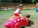
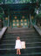

2000年8月16日11時39分撮影
パビリオンよりも風船ランドが一番楽しかったぁー。
2000年8月16日10時24分撮影
恐竜エキスポふくい2000会場で。本物に似たでっかい恐竜(ガオー)
より、こんなかわいいのがお気に入り。2000年8月15日11時00分撮影
兼六園の霞ヶ池で。おなかのすいたかもがえさを探し歩いてます。2000年8月15日10時47分撮影
金沢の兼六園にて。パパが「重文成巽閣」に入っている間ママと
お散歩。2000年8月14日20時15分撮影
最近オフロあがりには必ず“パパァ！ミミー！”と、綿棒を持って
やってきます。（ママは由起子の耳そうじはできません・・・怖いから）
2000年8月12日13時21分撮影
350年間、閉ざされていた家光の墓地。
次の開門は50年後だとか・・・。2000年8月12日10時00分撮影
パパもママも由起子も日光東照宮の建物のすばらしさに感動！！2000年8月12日9時52分撮影
日光東照宮で有名な“見ザル・言わザル・聞かザル”の前で。2000年7月24日11時39分撮影
白樺湖のボートに乗りまちた。その後、ネェーネェーたちと一緒に
こいにえさをあげまちた。2000年7月24日10時14分撮影
信州・白樺湖畔にある“蓼科テディベア美術館”のおみやげ売場で。